Notre ambition : développer des filières bio, traçables et structurées dans la durée, capables de créer de la valeur pour les producteurs, les territoires et nos clients.
Nous développons des filières biologiques, traçables et structurées dans la durée. Notre rôle est de relier producteurs, collecteurs, partenaires de transformation et marchés pour construire une chaîne de valeur plus lisible, plus fiable et mieux partagée.
Le Bio constitue aujourd'hui le socle de notre modèle. Lorsque cela fait sens pour la filière et pour le marché, nous allons plus loin avec des démarches de commerce équitable, de développement local et de préservation des écosystèmes.
Chez Valúdo, un engagement n'est pas une déclaration : c'est une pratique, documentée et vérifiable.
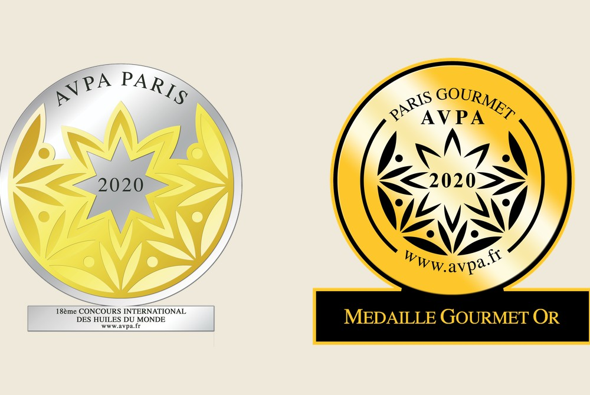
La qualité commence à l'origine et se construit à chaque étape : sélection de la matière, maîtrise de la transformation, contrôle et régularité des lots.
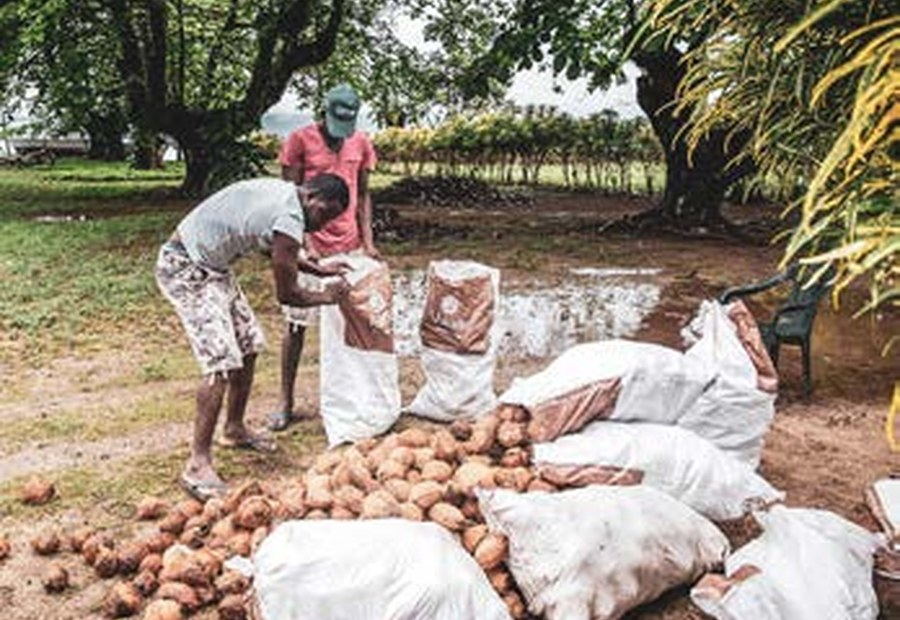
Le Bio est aujourd'hui le socle de nos filières. Lorsque cela est pertinent pour l'origine, la matière et les attentes du marché, nous développons également des démarches de commerce équitable, pour aller plus loin dans la relation avec les producteurs et dans le partage de la valeur.
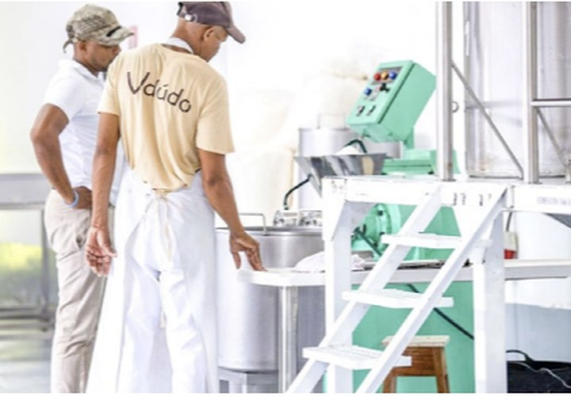
Chaque matière possède ses propres caractéristiques, ses propres usages et ses propres exigences. Nous adaptons nos plans de contrôle aux produits, aux origines et aux attentes de nos clients, avec l'appui de laboratoires partenaires en Europe.
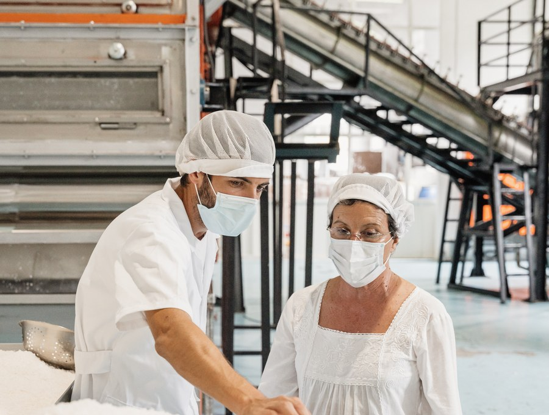
Comprendre une matière, c'est aussi pouvoir expliquer d'où elle vient. Nous structurons nos filières pour documenter l'origine, les partenaires de production et de transformation, et assurer une traçabilité adaptée jusqu'au lot livré.
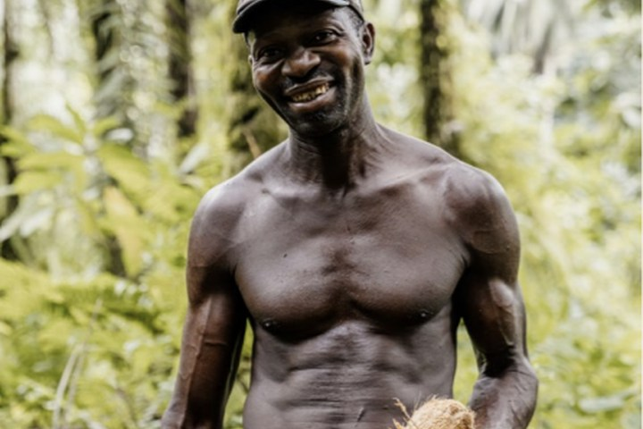
Une filière ne se construit pas sur une succession d'achats ponctuels. Nous privilégions des relations durables avec les producteurs, les collecteurs et les partenaires de transformation, afin d'améliorer progressivement la qualité, la fiabilité des approvisionnements et la création de valeur locale.
Nous ne voulons pas opposer performance agricole et préservation des territoires. Nous privilégions des modèles qui s'appuient sur les écosystèmes existants : cueillette, entretien des plantations en place, réhabilitation des parcelles, maintien du couvert arboré et pratiques agricoles de conservation.
L'objectif est de produire et de valoriser les ressources locales sans basculer vers une logique de conversion systématique des terres ou d'agriculture intensive.
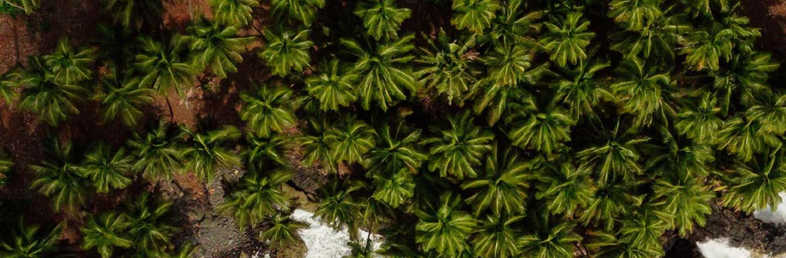
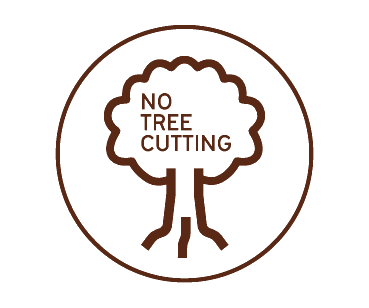
No Tree Cutting n'est pas une certification tierce, mais un engagement propre à Valúdo. Il traduit un principe simple : préserver les arbres et les écosystèmes existants, en particulier sur les filières fondées sur la cueillette ou sur des systèmes agricoles arborés.
Préserver avant de produire davantage.
Les certifications sont mobilisées selon les produits, les filières et les marchés concernés.
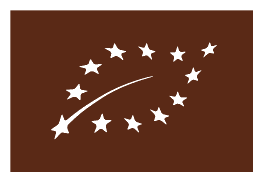
Certification biologique européenne encadrant les conditions de production, de transformation et de commercialisation des produits Bio.
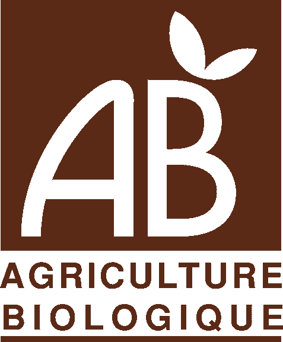
Logo français de l'agriculture biologique, reconnu sur le marché français, adossé à la réglementation Bio de l'Union européenne.
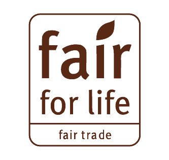
Standard de commerce équitable reposant notamment sur des mécanismes de prix minimum, des relations commerciales durables et un fonds de développement destiné aux communautés productrices.
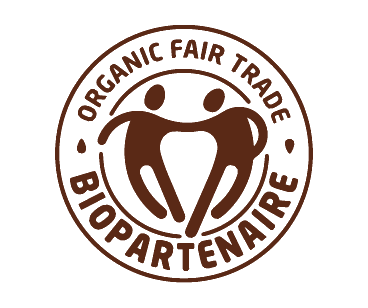
Démarche française associant agriculture biologique, relations durables avec les filières et engagements de commerce équitable.
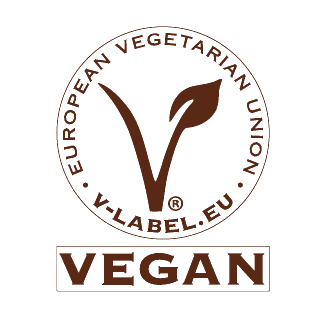
Certification applicable selon les références, attestant du respect des critères du référentiel Vegan. Sur nos filières coco concernées, nous privilégions également une récolte manuelle, sans recours à des animaux.
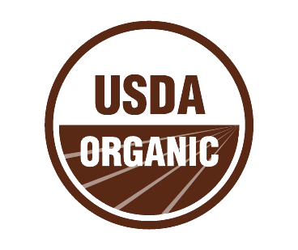
Certification biologique reconnue sur le marché américain.
Engagement propre à Valúdo en faveur du maintien des arbres et de la préservation des écosystèmes existants.
Certifications et engagements applicables selon les produits, les filières et les origines. Certificats à jour disponibles sur demande.
Nous ne cherchons pas à additionner des chiffres provenant d'origines différentes pour produire un indicateur global. Chaque filière a son histoire, son organisation et ses propres enjeux. Nous suivons nos impacts au niveau de chaque origine, à travers des indicateurs adaptés.
Ces données sont documentées dans nos rapports de filière et consolidées progressivement à mesure que nos nouvelles origines se structurent.
Notre filière historique nous permet aujourd'hui de mesurer concrètement ce que ce modèle peut créer à l'échelle d'un territoire.
Depuis près de dix ans, le fonds de développement accompagne des projets très concrets au service des communautés locales :
Producteurs et collecteurs impliqués dans la filière.
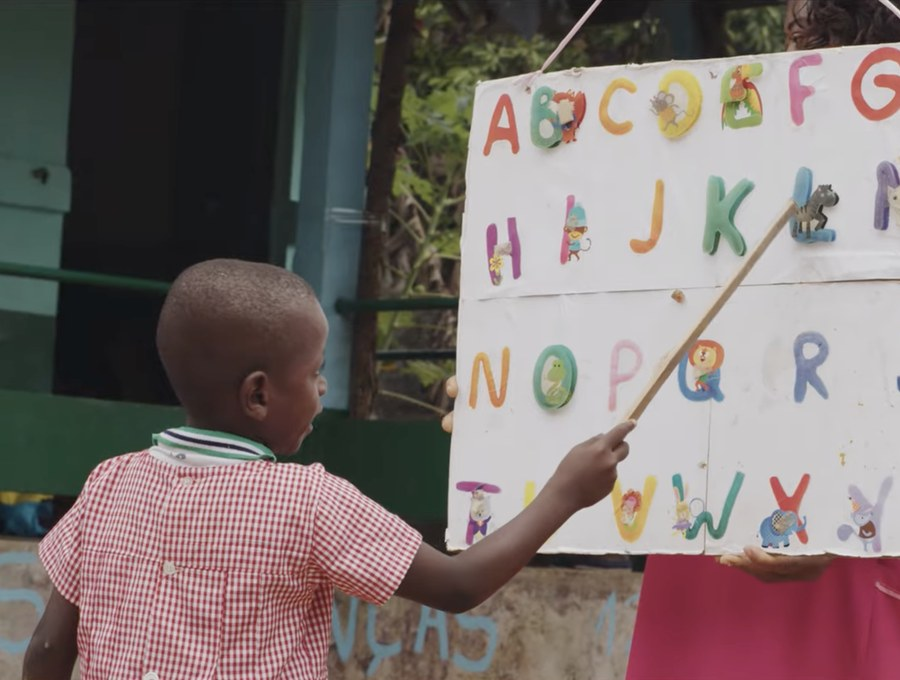
Des équipes locales engagées dans la collecte, la transformation, la qualité et les opérations.
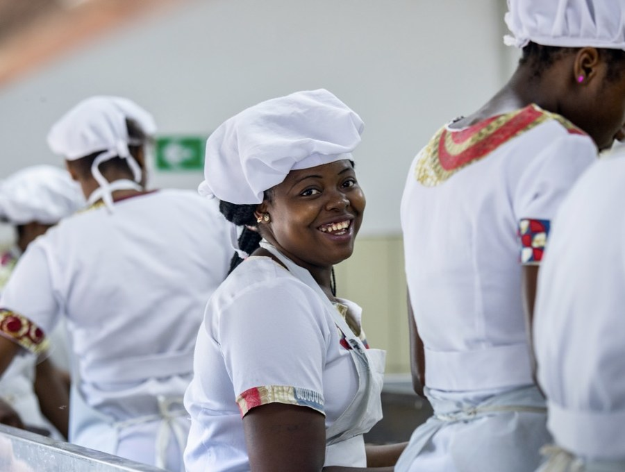
Des espaces agricoles maintenus, valorisés et certifiés Bio.
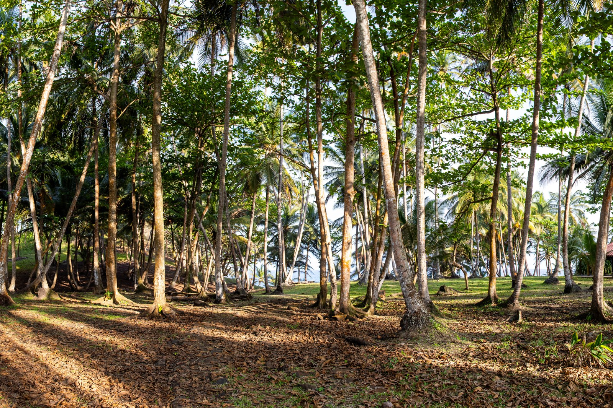
Parce qu'une filière équitable ne se mesure pas seulement au prix payé, mais aussi à ce qu'elle permet de construire autour d'elle.
Notre ambition est désormais d'appliquer le même niveau d'exigence de suivi et de transparence à l'ensemble de nos nouvelles filières.
Construire une filière dans la durée, c'est aussi investir dans celles et ceux qui la font vivre. À São Tomé-et-Príncipe comme en France, nous encourageons la formation, la montée en compétences, la responsabilisation et l'évolution interne. Nous cherchons à identifier les talents, à faire progresser les équipes et à créer les conditions permettant à chacun de prendre davantage de responsabilités au fur et à mesure du développement de Valúdo.
Notre ambition : faire grandir les équipes en même temps que les filières.

Certificats, rapports de filière, données de traçabilité et éléments de suivi sont disponibles selon les origines et les projets.